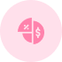

Dashboard
Dashboard Filial
Luis Henrique
Sair
Filial - SPTech
Comparação de Fluxo (Abril X Março)
-12%
(495 Acessos)
Setor Mais Visitado - Mês de Abril

Lacticínios -
486 Acessos
Fluxo Médio Mensal | Março
Fluxo Médio Semanal por Setor | 20/04 - 26/04
Fluxo Acumulado por Hora | Ontem